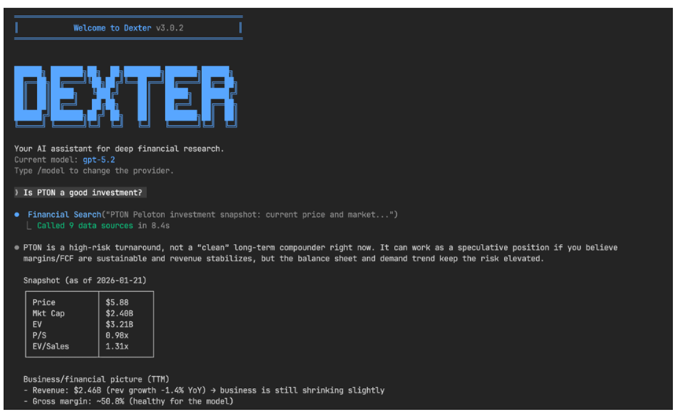
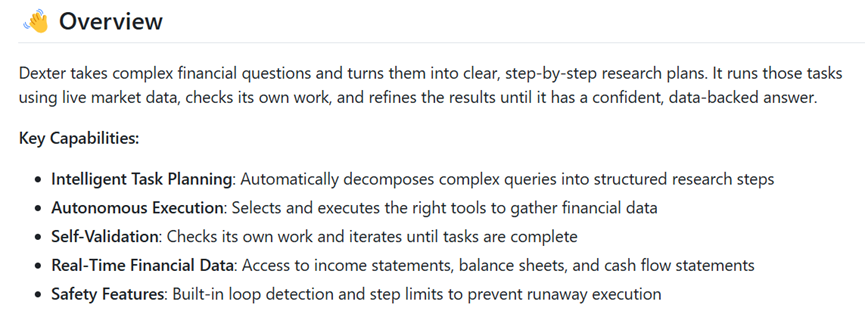
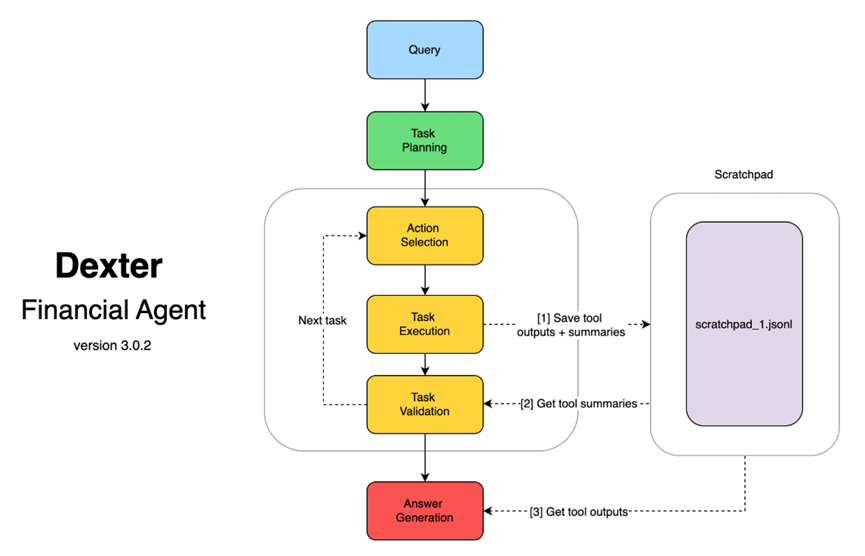
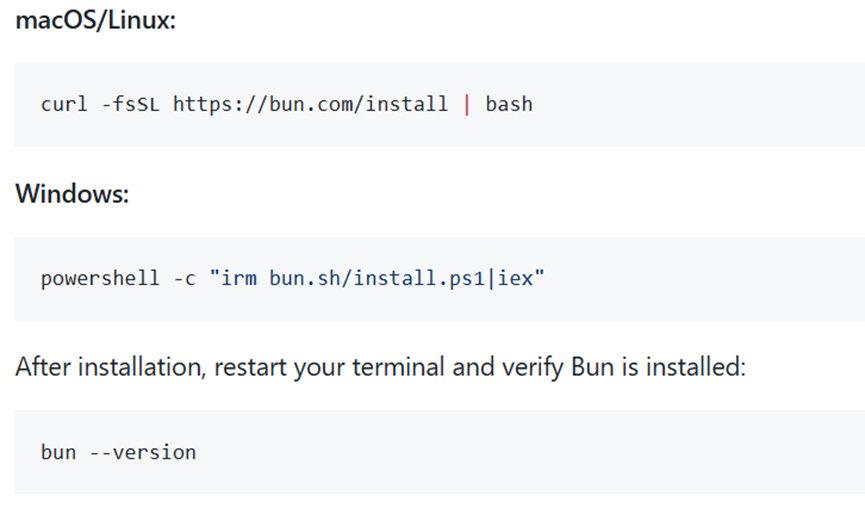

说实话，做金融研究真的挺累人的，每天要翻一大堆财报、公告、新闻，分析一个公司得查几百个数据点，填Excel填到手酸都不夸张。
市场变化又那么快，等你辛辛苦苦做完分析，机会可能早就溜走了。
介绍一个好用的智能体开源Dexter，让AI成为你的顶级金融分析师。

开源地址：https://github.com/virattt/dexter
简单说吧，Dexter就是一个会自己思考、规划和学习的金融研究AI助手。它能专门帮你干金融研究的活。
用起来的话，你会发现原本要好几个小时才能完成的复杂分析，现在几分钟就搞定了，而且不用花钱请什么昂贵的团队，一个Dexter就能顶得上好几个人的工作量。
最让我惊喜的是它的几个核心功能。Dexter特别擅长把复杂的金融问题拆解开，你随口给它扔一个类似分析苹果公司过去五年盈利能力的问题。
它会自动规划出一套清晰的研究步骤，就像身边有个经验丰富的老手在给你出谋划策。
它还能自己跑去找数据，什么收入表、资产负债表、现金流量表统统不在话下，也不用你一个网站一个网站地去扒拉。

Dexter做完分析后会自己检查一遍，发现不对的地方就自动修正，一遍不行就多来几次，直到给出靠谱的结果。
这点真的很重要，毕竟AI有时候会一本正经地胡说八道。而且它连的是实时的金融数据库，保证数据都是最新的，不会出现过期的情况。
当然啦，项目里还内置了一些安全机制，防止AI跑偏或者陷入无限循环，用起来还是挺让人放心的。
Dexter还有一些高级玩法，比如运行评估套件，让Dexter回答一堆标准金融问题，然后看看它自动评分的过程，还能实时看进度和准确率统计。

或者你可以像个黑客一样去看看.dexter/scratchpad/文件夹里的东西，那里保存了Dexter每次分析的过程，都是JSON格式。
你能看到它问了什么问题、用了什么工具、拿到了什么数据，甚至能看到它是怎么思考的，就像在读AI的内心日记一样，特别有意思。
安装过程其实挺简单的，大概几分钟就能搞定。首先得装个Bun运行时，Mac和Linux系统直接用curl命令就行，Windows用户可以用PowerShell那一套。

装好后记得重启终端，用bun --version命令确认一下装没装对。接着就是把项目克隆下来，用git clone那套命令，然后cd进目录再跑个bun install。
配置这块稍微麻烦点，需要复制env.example文件到.env，然后填几个API密钥。
OpenAI那个应该很多人都有，Financial Datasets和ExaSearch的密钥也都能免费或者低成本拿到。最后跑个bun start，Dexter就启动了。
想转型AI，不被时代淘汰
CAIE注册人工智能工程师认证
岗位能力 × AI工具 ×转型方向 × 场景落地 = 新AI职业价值
扫码免费领取《AI工程师入门学习指南》